Welcome to Yacht On Cloud user guide.
Login Screen
Per effettuare il log-in è obbligatorio l’inserimento nei form dei seguenti campi:
Tenant: Nome identificativo dello specifico tenant abilitato.Email: La propria e-mail che rappresenta la chiave univoca dell’utente.Password: La propria password.
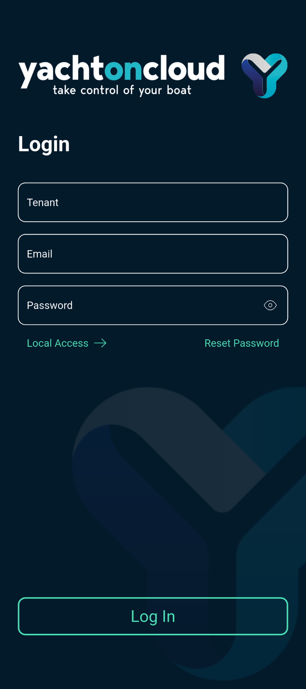
Dopo aver riempito i campi sarà possibile cliccare sul tasto Log In.
In caso di credenziali errate l'utente verrà informato con un messaggio di errore.
In caso di credenziali corrette l'utente passerà alla prossima schermata.
Vessel Selection Page
In questa schermata l'utente customer avrà la possibilità di visualizzare i propri vessel registrati all'interno del sistema.
Nel caso fosse presente un solo vessel per lo specifico customer si procederà alla selezione automatica del vessel subito dopo la login page.
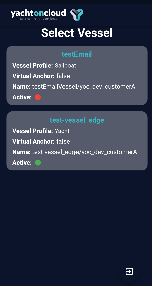
Lo sfondo verde o grigio indicherà rispettivamente una imbarcazione online (raggiungibile) o offline (non raggiungibile).
Vessel Dashboard
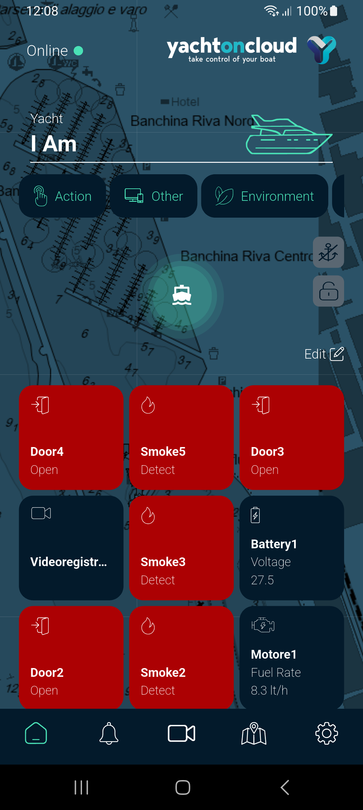
1. Boat Info
La dashboard si presenta in questo modo.
In alto troveremo le informazioni riguardanti l'imbarcazione:
- Lo stato dell'imbarcazione: Se essa è raggiungibile o meno:
OnlineoOffline. - Il nome e la tipologia della propria imbarcazione:
Yatch,CatamaranooDinghi. - Se risulta ancorata oppure no:
MooredoUnfastened.
Cliccando sullo stato dell'imbarcazione si verrà reinderizzati verso la pagina di connettività. Vedi Connectivity Screen
L'immagine centrale cambierà in base alla tipologia di imbarcazione di cui siamo in possesso.
In caso l'imbarcazione sia offline lo sfondo alle spalle dell'immagine risulterà grigio.
In caso sia presente un evento allarmante riguardante l'imbarcazione lo sfondo alle spalle sarà rosso.
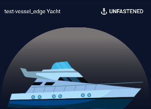
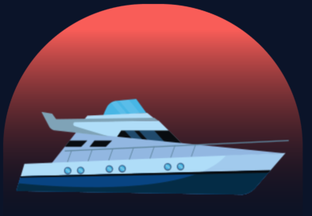
Sotto l'immagine dell'inbarcazione è presente il bottone che ci permette di cambiare lo stato dell'imbarcazione da Armed a Disarmed. Questo abilita il sistema di monitoraggio e sicurezza perimetrale.
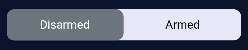
Cliccando per armare ci comparirà un pop-up e ci verrà richiesto il PIN di sicurezza inoltre comparirà anche un avviso in caso il device si trova in stato Triggered (ad esempio se una porta è in stato open).
Inizialmente ci sarà un PIN di default che verrà dato al cliente, per modificare Vedi 4. Change Pin
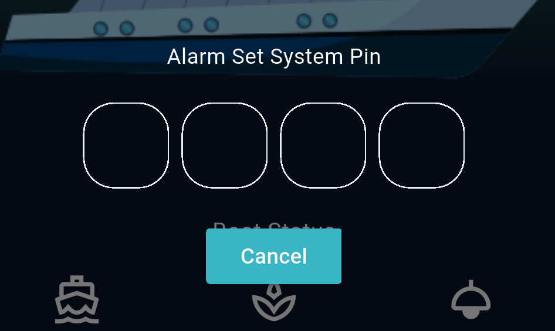
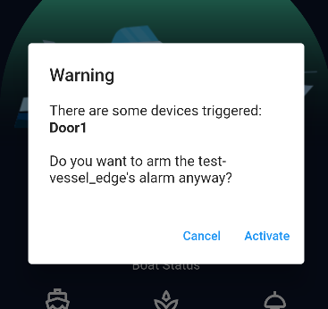
2. Menu Rapido
Al di sotto del bottone troveremo una piccola sezione Boat Status.
Questa sezione ha la funzione di menu rapido. In questo menu è possibile visionare le informazioni relative ai Device: Control Panel, Environment, Action, Security, Safety e infine è possibile visionare le Telecamere di sicurezza presenti sull’imbarcazione. Vedi TLC Screen
Ogni pulsante del menu rendirizzerà l'utente verso una sezione specifica di cui tratteremo in seguito.
Quando ci sarà un nuovo allarme sul pulssante Security apparirà un pallino rosso sull'icona.
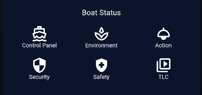
3. Menu Principale
Infine abbiamo il menu principale dove è possibile navigare tra Home – Allarmi – Devices – Mappa – Impostazioni.
In breve:
Home: Permette di ritornare alla sezione Dashboard principale.Alarm: Permette di spostarsi nella sezione allarmi dove si potrà visualizzare lo storico degli allarmi attivati.Devices: Permette di spostarsi nella sezione dove si avrà accesso alla lista di tutti i dispositivi.Map: Permette di spostarsi nella sezione dove sarà possibile visualizzare la mappa.Settings: Permette di spostarsi nella sezione di impostazioni del sistema.
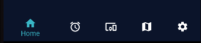
Queste sezioni verranno discusse in seguito in dettaglio.
Connectivity Screen
Nella sezione connettività saranno presenti informazioni riguardanti la connettività LTE.
Per accedere a questa pagina è necessario cliccare sullo stato dell'imbarcazione (Online oppure Offline) presente nella Home in alto a destra della schermata.
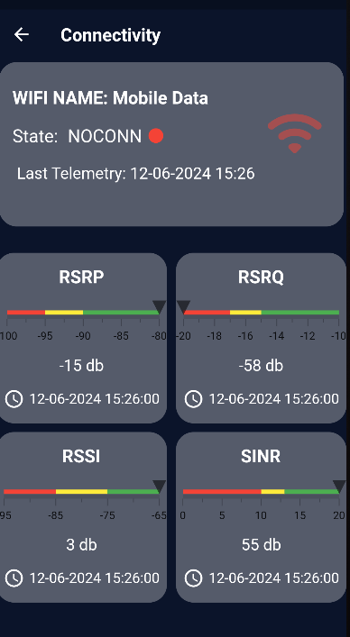
Come si può notare nel grafico è presente una scala di valori rappresentati da dei colori:
Green= Good.Yellow= Poor.Red= Bad.
In genere il valore minimo indica che non vi è alcun segnale.
Lo stato ci indica lo stato di connessione globale:
-
Se almeno un valore è rosso allora lo stato è
NOCONN. -
Se almeno un valore è giallo allora lo stato è
POOR. -
Se almeno un valore è verde allora lo stato è
GOOD.
Dashboard Devices
Abbiamo due modi per poter visualizzare i dispositivi disponibili per la nostra imbarcazione: utilizzare il Menu Rapido per andare ad analizzare la macrocategoria di dispositivi a cui siamo interessati, oppure utilizzare il Menu Principale e cliccare sul pulsante "Devices" (raffigurato da un icona apposita) in questo modo avremo una schermata con tutti i dispositivi.
Cliccando sull'icona per visualizzare tuti i dispositivi avremo una schermata scorrevole.
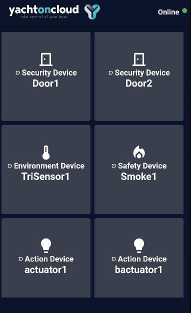
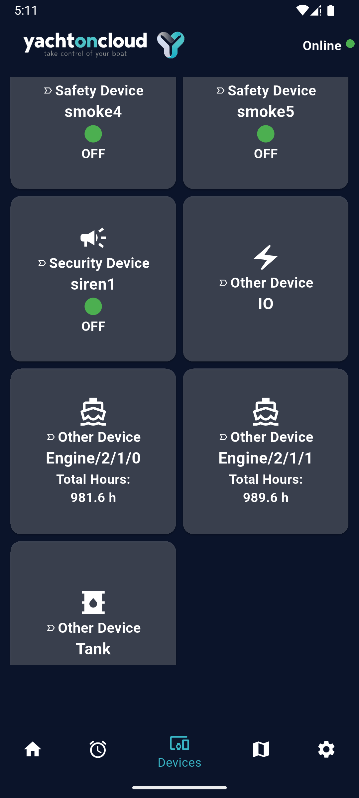
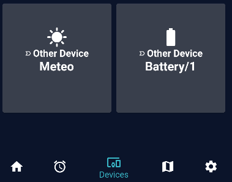
Ogni card che troviamo in questa schermata corrisponde ad un device, ogni device ha la sua pagina con i relativi dettagli.
Nella pagina di dettaglio del sensore verranno rappresentati in lista tutte le metriche associate ad un dato sensore.
Accanto a ciascuna telemetria un pulsante consentirà di accedere alla sezione History per la visualizzazione tutte le telemetrie per una più completa ricerca. (Vedi History Page).
Infine un carosello a pié di pagina serve per spostarsi velocemente tra dispositivi della stessa categoria.
Questi funzionamenti sono uguali per tutti i dispositivi.
1. Door Page
La schermata Door serve per monitorare lo stato delle porte, se essa siano aperta o chiusa.
Verde indica che la porta è chiusa, Rosso indica che la porta è aperta.
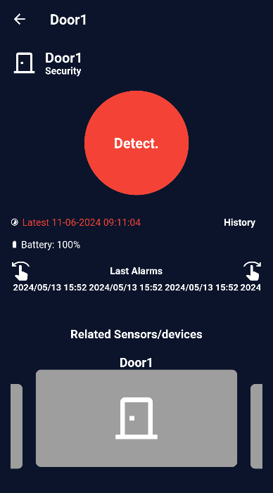
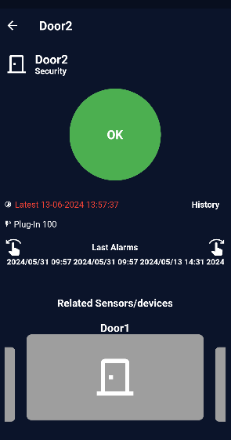
2. Tri-Sensor Page
La schermata Tri-Sensor serve per monitorare i 3 sensori: Motion Sensor, Temperature e Illuminance.
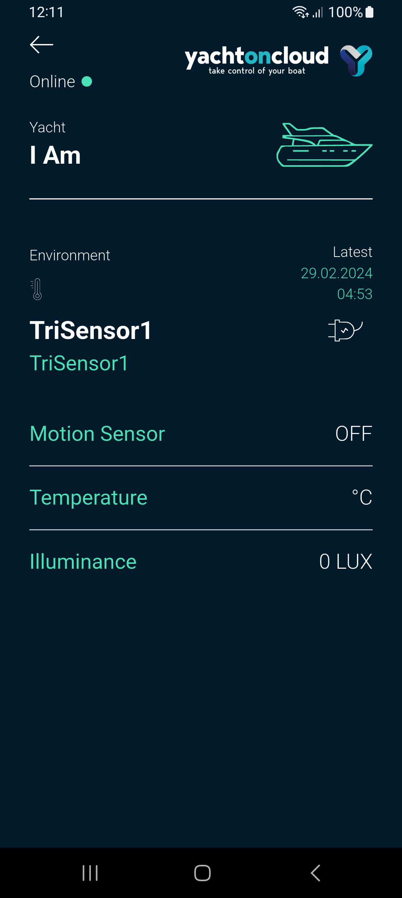
- Motion Sensor = Percepisce i movimenti all'interno di un raggio d'azione.
- Temperature = Misura la temperatura dell'imbarcazione.
- Illuminance = Misura la quantità di Luce presente.
Qui possiamo controllare gli ultimi valori dei sensori e la percentuale di batteria del dispositivo.
3. Smoke Page
La schermata Smoke serve per rilevare la presenza di fumo.
Come per la Door anche i colori sono i medesimi di conseguenza Verde indica che non c'è presenza di fumo, Rosso indica presenza di fumo.
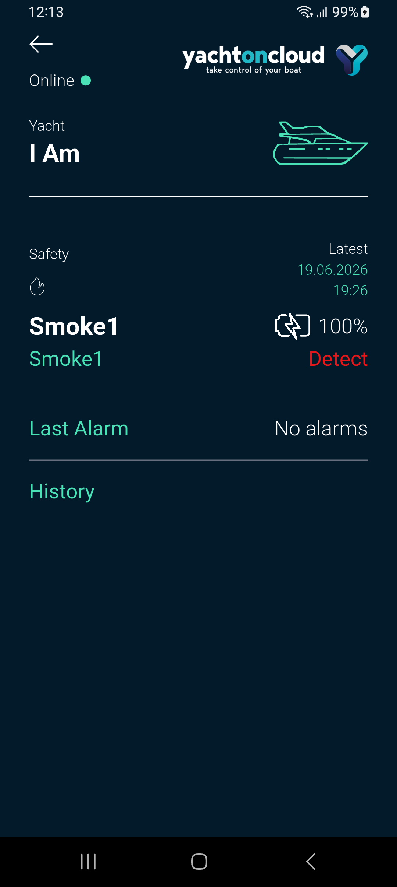
4. Actuator Page
Gli Actuator permettono di controllare lo stato delle luci all'interno dell'imbarcazione.
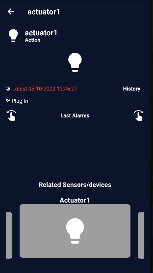
L'immagine al centro che rappresenta una lampadina ci indica se la luce sia o meno spenta.
Bianca indica che la luce è spenta, mentre Gialla indica che la luce è accesa.
5. Siren Page
La schermata Siren permette di controllare lo stato della sirena in caso stia suonando o meno.
Anche qui i colori sono gli stessi per la door.
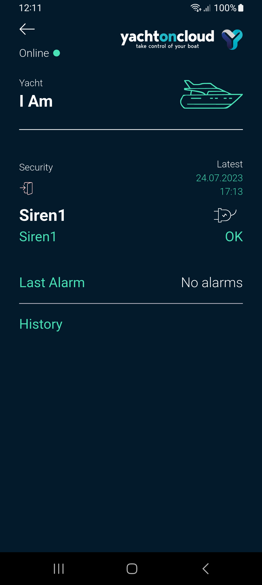
6. Engine Page
La schermata Engine permette di controllare i valori riguardanti il motore dell'imbarcazione.
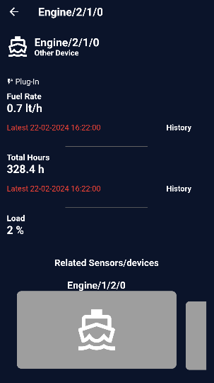
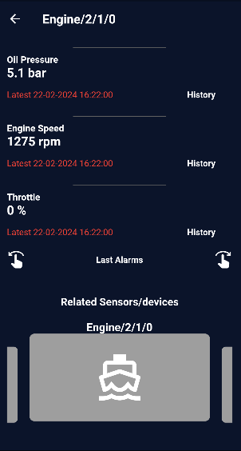
Al suo interno sono presenti diversi valori:
Fuel Rate= Permette di monitorare il tasso di consumo del carburante.Total Hours= Permette di monitorare le ore di funzionamento del motore.Load= Permette di monitorare il carico del motore.Oil Pressure= Permette di monitorare la pressione dell'olio.Engine Speed= Permette di monitorare la velocità indicata in giri al minuto.Throttle= Permette di monitorare la percentuale di accelerazione richiesta dal conducente.
7. Navigation Page
La schermata Navigation permette di controllare tutti i dati riguardanti la navigazione.
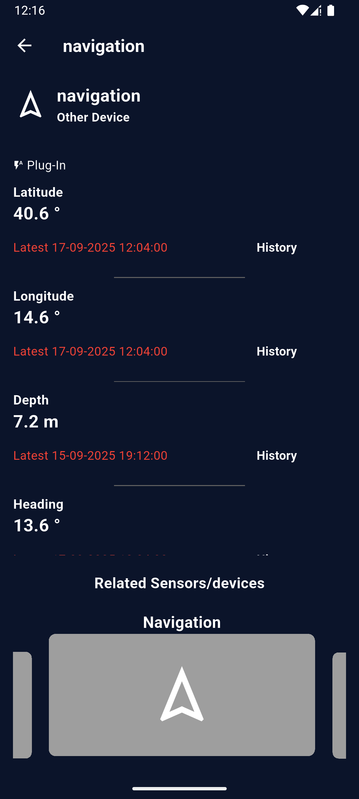
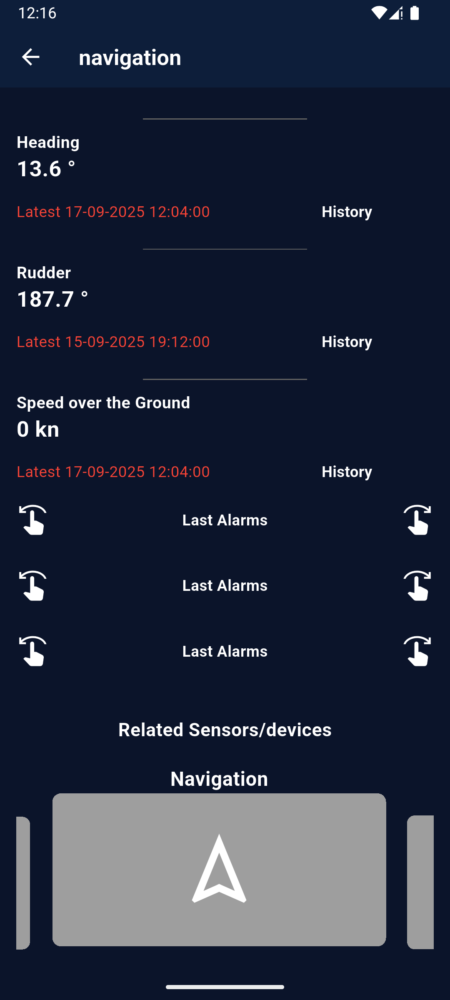
Come per Engine anche qui abbiamo diversi valori:
Latitude= Permette di visualizzare la latitudine.Longitude= Permette di visualizzare la longitudine.Depth= Permette di monitorare il livello di prodondità.Heading= Permette di visualizzare la direzione del muso della propria imbarcazione.Rudder= Permette di monitorare il ratio tra la velocità e l'angolo del timone.Speed over the Ground= Permette di monitorare la velocità dell'imbarcazione rispetto alla superficie terrestre.
8. Meteo Page
La schermata Meteo permette di monitorare le condizioni atmosferiche secondo dati nautici.
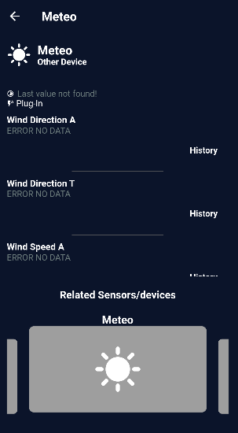
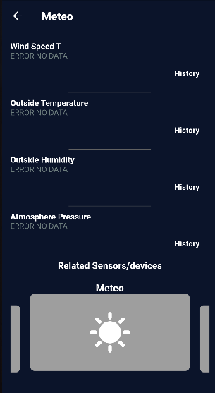
Anche qui avremo diversi valori a disposizione:
Wind Direction= Permette di monitorare la direzione da cui soffia il vento.Wind Speed= Permette di monitorare la velocità media del vento.Outside Temperature= Permette di monitorare la corretta temperatura esterna.Outside Humidity= Permette di monitorare la corretta umidità esterna.Atmosphere Pressure= Permette di monitorare la pressione atmosferica.
9. Battery Page
La schermata Battery permette di monitorare il voltaggio della batteria del motore.
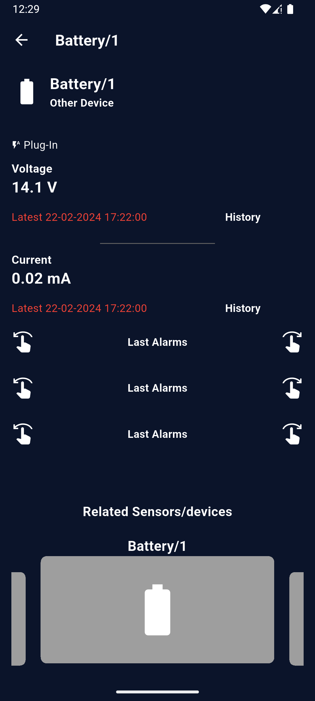
10. History Page
La History permette di poter visualizzare lo storico delle telemetrie di un dispositivo.
Generalmente nel momento in cui proviamo a visualizzare lo storico di un determinato device comparirà un grafico dove ci vengono mostrate le ultime telemetrie e il loro andamento nel tempo.
Lo storico ci viene rappresentato in tre modi differenti:
- Grafico a barre.
- Grafico a linee o ad area.
- Tabella con valori.
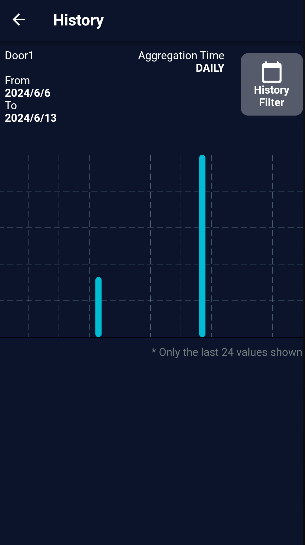
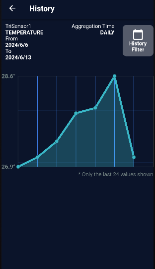
L'ultima rappresentazione ci viene mostrata nel momento in cui non abbiamo telemetrie negli ultimi 7 giorni.
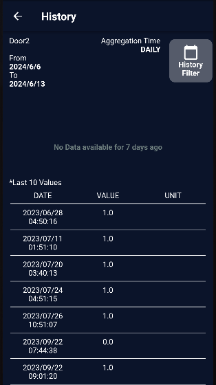
Sopra al grafico o al messaggio che ci avvisa di non aver trovato dati recenti, vi sono delle indicazioni che riguardano il dispositivo, il range di giorni in cui recuperare i valori e il tempo di aggregazione. Questi sono valori di default
Cliccando sul bottone in alto a destra History Filter, vi è la possibilità anche di impostare dei filtri per una migliore gestione di visualizzazione dei dati.
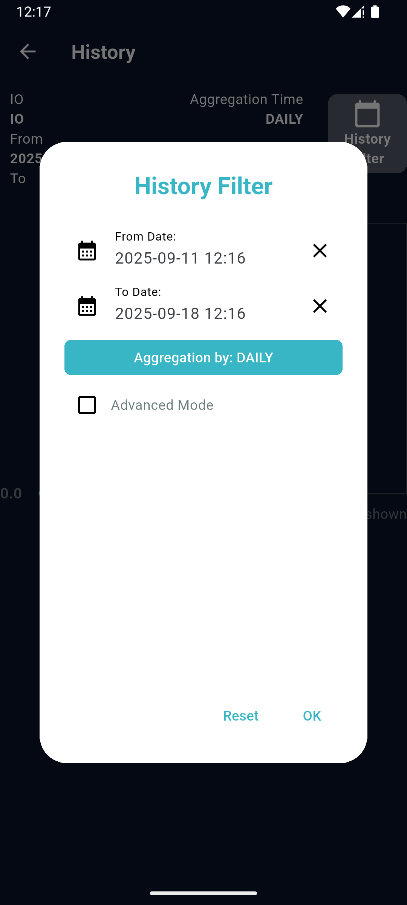
Come si può vedere dall'immagine, è possibile in questo modo decidere il range di giorni e filtrare i dati per quel range, di default la modalità di aggregazione sarà DAILY.
Spuntando la casella Advanced Mode avremo a disposizione dei filtri avanzati.
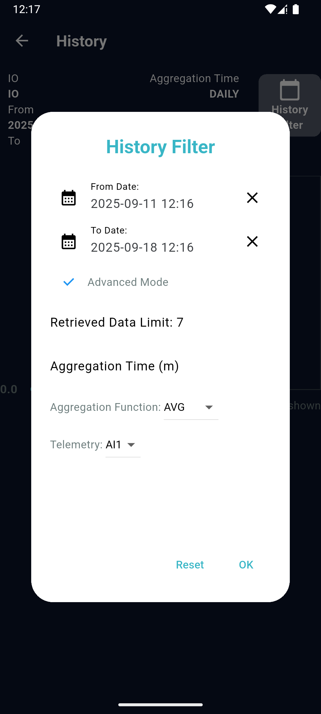
In questo modo potremmo modificare alcuni dati tra cui: Retrieved Data, Aggregation Time, Aggregation Function.
Esistono vari tipi di funzioni di aggregazione:
- AVG
- MAX
- MIN
- COUNT
- SUM
Inoltre dove è possibile, in caso di più valori in un singolo device, è possibile anche scegliere quale telemetria vogliamo analizzare.
Alarms Dashboard
All'interno del Menu Principale è possibile, cliccando sull'apposita icona (rappresentata da un orologio), visualizzare un elenco degli ultimi allarmi scattati.
Dalla dashboard possiamo capire quale dispositivo ha fatto scattare un allarme indicando data e orario.
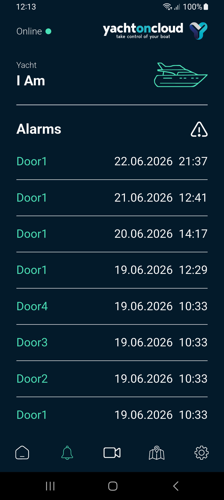
Vi è la possibilità cliccando sull'allarme di andare a visualizzare il device responsabile per i dettagli.
1. Notifiche Allarme
Al momento della ricezione di un allarme, l'utente verrà informato tramite una notifica sul proprio dispositivo mobile.
La notifica presenterà le seguenti informazioni:
- Categoria del dispositivo: Safety, Security, Anchor.
- Nome Dispositivo.
- Data e ora.
Mentre l'app è aperta verrà mostrata una notifica pop-up con le informazioni dell’allarme.
Nella modale saranno presenti due pulsanti, uno per accedere al dettaglio del sensore collegato all’evento allarmante e un pulsante che consente di armare o disarmare.
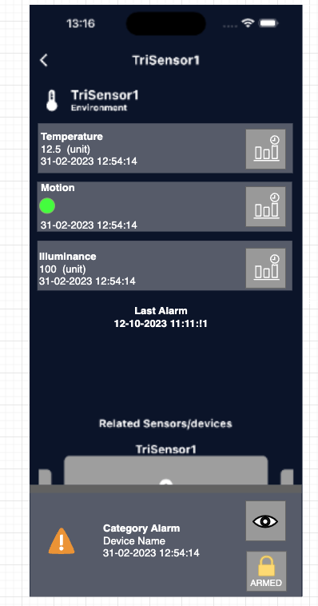
In base alla tipologia dell'errore la modale avrà delle funzionalità differenti.
Se l'evento allarmante è un sensore specifico ci sarà la possibiità di accedere al dettaglio del sensore collegato all’allarme e un pulsante che consente di armare o disarmare.
Se l'evento allarmante riguarda il GPS, comparirà la possibilità di accedere alla pagina tracking.
Nel caso di allarme Security apparirà anche la possibilità di eseguire lo sblocco dell’armatura, altresì nel caso di allarme di tipo Anchor il pulsante per la disattivazione dell’ancora.
Tracking Page
All'interno del Menu Principale è possibile, cliccando sull'apposita icona (rappresentata da una Mappa), il tracking in tempo reale su una mappa della propria imbarcazione.
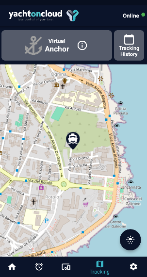
Cliccando sull'icona della propria imbarcazione sarà possibile visualizzare alcuni dati come la Latitudine e la Longitudine del luogo in cui si trova in quel momento l'imbarcazione.
In questa sezione abbiamo 3 funzionalità fondamentali, tutte corrisposte da un apposito pulsante e che descriveremo in dettaglio.
1. Tracking History
Cliccando sull'apposito pulsante Tracking History è possibile visionare i movimenti dell’imbarcazione in un determinato giorno selezionabile da un calendario.
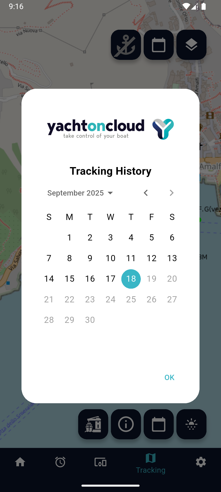
2. Virtual Anchor
Cliccando sull'apposito pulsante Virtual Anchor è possibile inserire l’ancora virtuale.
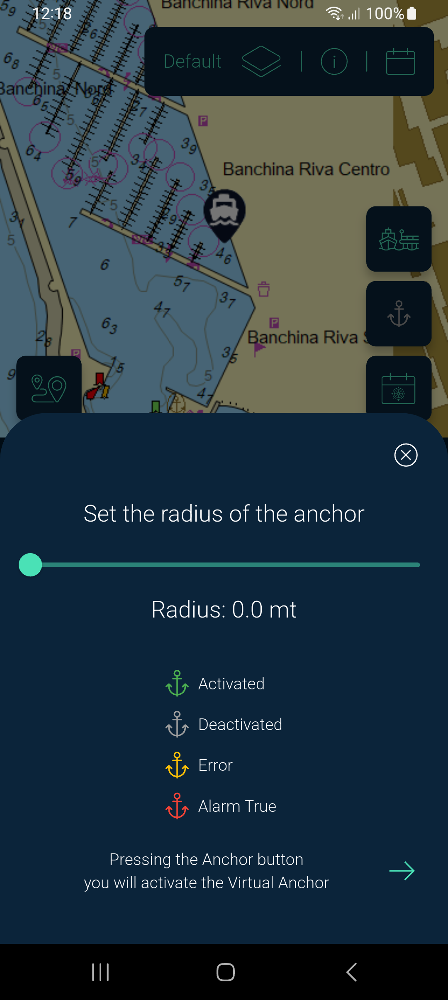
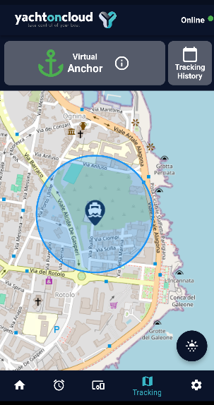
Se attiva crea una circonferenza attorno all’imbarcazione, quando l’imbarcazione si sposta più del raggio selezionato dalla circonferenza scatterà un allarme.
Cliccando sul bottone info comprarirà un pop-up.
All'interno vi sarà descritta una legenda che spiega il funzionamento della virtual Anchor.
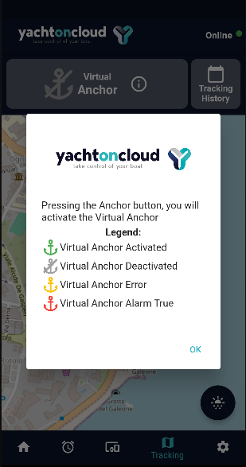
3. Weather Screen
In questa sezione sono contenute tutte le informazioni relative alle condizioni meteo orarie e del dettaglio marino del servizio DTN.
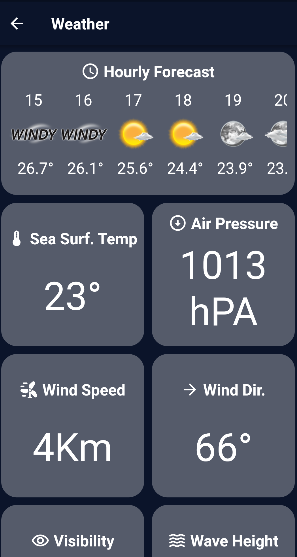
Di seguito un elenco di tutte i dati che possiamo trovare nella pagina:
Hourly Forecast: Viene presentato come un widget scrollabile lateralmente ed indica le previsioni meteo della giornata.Sea Surface Temperature: Temperatura della superficie del mare.Air Pressure: Pressione dell'aria.Wind Speed: Velocità del vento misurato in km.Wind Direction: Direzione del vento misurato in gradi.Visibility: Tasso di visibilità misurato in km.Wave Height: Misura della grandezza delle onde.Wave Direction: Direzione delle onde misurata in gradi.Total Swell Wave Direction: Direzione totale del moto delle onde misurato in gradi.Total Swell Wave Height: Altezza totale del moto delle onde.
Settings Screen
L'ultimo bottone presente all'interno del Menu Principale rappresentato da un icona Ingranaggio è quello per i Settings.
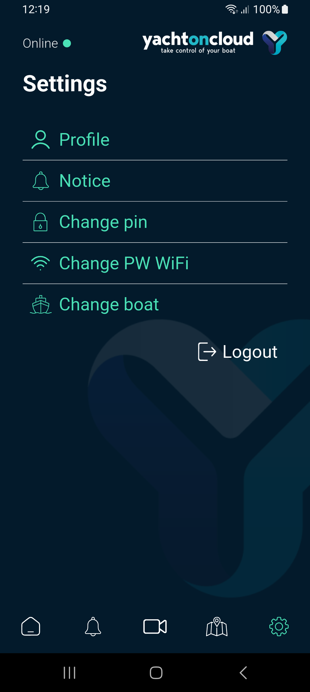
Cliccato l'apposito pulsante si aprirà un menu.
In questa pagina l'utente avrà accesso a diverse opzioni relative alle impostazioni dell'applicazione.
1. Profile Page
In questa pagina l’utente potrà visualizzare le proprie informazioni quali tenant, customer, username, email, nome e cognome dell’account.
Avrà la possibilità di poter cambiare la propria immagine di profilo cliccando sull'apposito bottone.
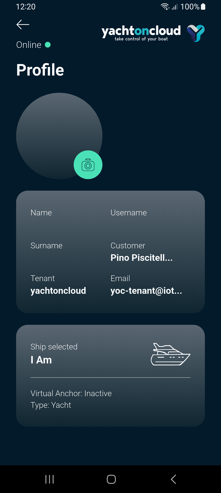
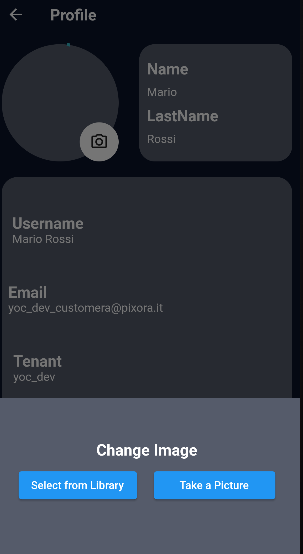
Si aprirà di conseguenza un menu dove sarà possibile cambiare la propria foto profilo scegliendo nell'archivio del proprio dispositivio oppure scattare una foto in quel preciso istante ed utilizzarla.
2. Assistance Screen
In questa pagina l’utente potrà leggere le F.A.Q (domande frequenti), e richiedere assistenza tramite le apposite informazioni di contatto.
Sarà possibile aprire un Tickets di supporto cliccando sul bottone apposito in alto a sinistra.
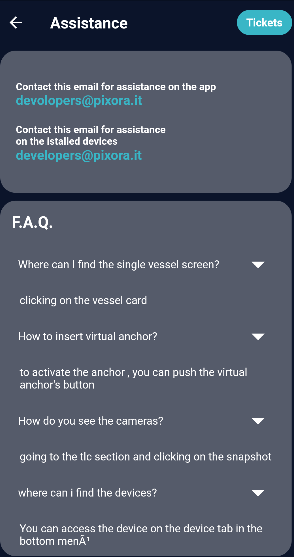
Le FAQ potranno essere ridimensionate in modo da non visualizzare quelle di non interesse.
3. Settings Page
In questa pagina l’utente potrà visualizzare tutte le impostazioni dell’app: vibrazione, suoneria e inoltre potrà personalizzare l’immagine della propria barca.
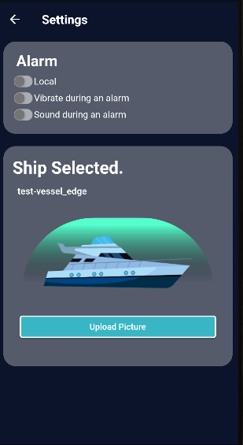
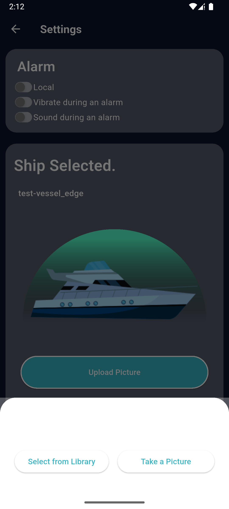
Cliccando sul pulsante al di sotto dell'immagine dell'imbarcazione si aprirà un menu dove sarà possibile cambiare la propria foto profilo scegliendo nell'archivio del proprio dispositivio oppure scattare una foto in quel preciso istante ed utilizzarla.
4. Change Pin
Cliccando su Change Pin si aprirà la schermata dove sarà possibile cambiare il pin per poter armare e disarmare l'imbarcazione.
Inizialmente viene dato un pin di default che è consigliabile cambiare il prima possibile e crearne uno personalizzato per una maggiore sicurezza.
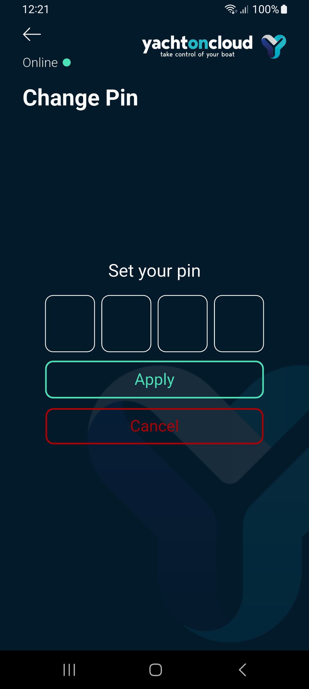
5. Change Boat
Cliccando sul bottone Change Boat si verrà riportati alla sezione dove è possibile selezionare un'altra imbarcazione tra quelle in possesso.
6. Logout
Cliccando su Logout l'utente verrà riportato alla schermata di Login dove potrà inserire di nuovo le credenziali di accesso.
TLC Screen
All'interno del Menu Rapido è possibile, cliccando sull'apposita icona (rappresentata da un Media Player), visualizzare una lista di tutte le proprie telecamere.
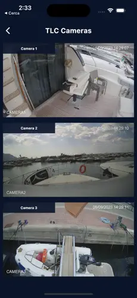
Ciò che l'utente vedrà in questa schermata sarà l'ultimo Snapshot effettuato da ogni telecamera.
Cliccando su una delle telecamere a disposizione si verrà reindirizzati nella schermata di dettaglio di quella specifica telecamera.
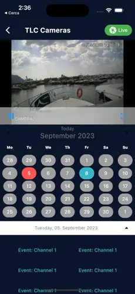
La schermata di presenterà con un video live della telecamera selezionata, con possibilità di azionare il Fullscreen, facendo click sul pulsante a destra, o mettere in Pausa e poi riprendere dall'istante attuale.
Al di sotto della diretta, tramite un calendario è possibile controllare tutte le registrazioni catturate dagli allarmi scattati per quella specifica data. Il calendario sarà scrollabile lateralmente per cambiare il mese di selezione.
I giorni selezionabili sul calendario avranno diversi colori:
Azzurro= Giorno attuale.Rosso= Giorno in cui sono presenti delle registrazioni.Grigio= Giorno in cui non sono presenti alcune registrazioni.
Cliccando su un giorno in cui è presente un evento, Comparirà un elenco di allarmi corrispondenti al device incriminato. Cliccando sull'evento, si procede all'avvio del Playback della registrazione per il canale stream tlc corrente.
In questo modo la dicitura evidenziata in verde Live presente in alto a destra verrà sostituita da VOD evidenziato in giallo, per indicare che il video non è più in diretta bensì si tratta di una registrazione.
Un pulsante X affianco allo stato ci permetterà di ritornare a visualizzare la live della telecamera.